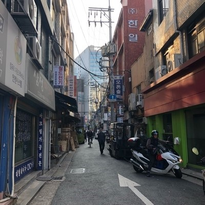

#을지로
#을지로_핫플레이스
- 을지로에는 보통 인쇄점이나 철물점, 조명을 파는 곳이 많지만 사실 곳곳에 숨은 예쁜 카페나 편집숍이 많다.
다른 곳들과 다른 점이 있다면 외관만 봐서는 이곳이 카페인지 편집숍인지 알 수 없다는 점이다.
대부분 유명한 곳들도 건물 밖에서 한눈에 알아보기가 어렵고 들어가는 입구가 조금 무섭게 느껴지는 곳들이 많다.
그래서 찾아가고 싶은 곳이 있으면 번지수를 보면서 찾아야 금방 찾을 수 있고, 간판만 봐서는 찾기가 어렵다.
을지로 카페는 한 곳에 모여있기 때문에 요령만 잘 안다면 길을 찾는 게 쉬울 수도 있다.
다만 철물점이나 공장 건물에 있는 경우가 많아서 들어가는 입구가 조금 무서울 수 있다.
